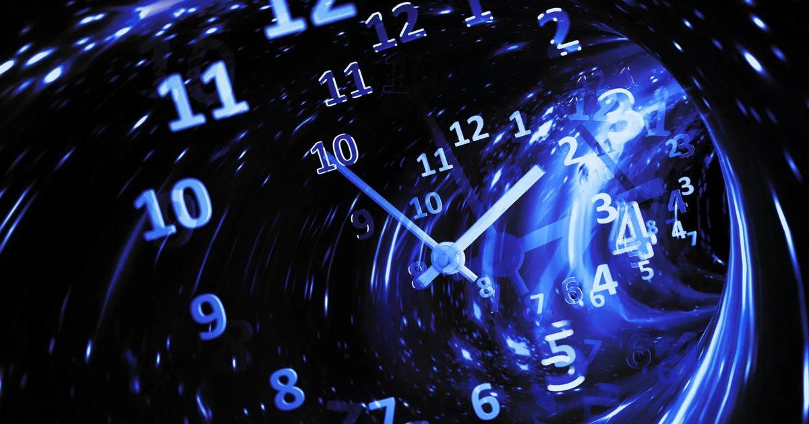

Квантовая суперпозиция времени: атомные часы могут доказать сосуществование нескольких временных потоков
Международная группа физиков предложила способ экспериментально обнаружить квантовую суперпозицию времени с помощью современных атомных часов. Исследование, опубликованное в Physical Review Letters, показывает, что высокая точность этих приборов позволяет зафиксировать эффекты, объединяющие квантовую механику и общую теорию относительности.
Почему природа времени остаётся неразгаданной загадкой
В привычном понимании время течёт равномерно для всех наблюдателей, но физика XX века полностью перевернула это представление. Общая теория относительности Эйнштейна доказала: скорость течения времени зависит от скорости движения объекта и силы гравитационного поля, в котором он находится. Это означает, что два идентичных часов покажут разные значения, если один из них переместить ближе к массивному телу или разогнать до высокой скорости.
Квантовая механика добавляет ещё большей странности: согласно принципу суперпозиции, частица может одновременно находиться в нескольких состояниях до момента измерения. Если применить эту идею к часам, то их движение может следовать множеству траекторий одновременно. Поскольку движение влияет на течение времени через релятивизм, возникает возможность сосуществования разных временных темпов в одном квантовом состоянии — феномен, который никогда не наблюдался напрямую.

Как атомные часы становятся инструментом фундаментальной физики
Атомные часы — самые точные измерятельные приборы, созданные человечеством. Вместо механических колебаний они используют ультрастабильные частоты атомных переходов, что обеспечивает точность на уровне одной секунды за миллиарды лет. Такая чувствительность уже позволила зафиксировать релятивистские различия в течении времени между часами, разделенными вертикально всего на несколько миллиметров.
Исследователи из Кюсю, Стивенса, Ватерлоо, NIST и других центров обнаружили, что квантовое движение ионов в часах запутывается с их внутренней энергией. Квантовая запутанность — это связь, при которой два свойства системы перестают существовать независимо. В данном случае она приводит к измеримой потере квантовой когерентности часов, что и служит признаком суперпозиции временных темпов.

Теоретическая модель и перспективы экспериментальной проверки
Команда разработала новый метод управления движением ионов в ловушке, повышающий чувствительность к искомому эффекту на два-три порядка. Это делает детектирование квантовой суперпозиции времени достижимым для существующих передовых установок. Главный автор работы, доцент Джошуа Фу, подчеркивает: именно невиданная точность современных часов натолкнула на идею создать такую теоретическую модель.
На данном этапе работа остаётся теоретической. Следующий шаг — переход к реальному эксперименту с учётом лабораторных шумов, нестабильностей и систематических ошибок. Успех откроет путь к изучению квантовой гравитации — единой теории, описывающей гравитацию на микромасштабах, которая ускользает от физиков уже десятилетия.
От фундаментальной науки к технологиям нового поколения
Помимо проверки основ физики, предложенный подход может привести к созданию ещё более точных атомных часов. Понимание и контроль квантовой запутанности между движением и внутренними состояниями ионов позволит снизить фундаментальные пределы неопределенности измерений времени.
Такие часы найдут применение не только в базовых исследованиях. Навигационные системы, синхронизация финансовых сетей, глубококосмическая связь и геодезия — все эти области зависят от экстремальной точности времени. Новые физические принципы их работы могут стать основой для технологий, которые мы пока только начинаем воображать.
Коротко: Физики предложили обнаружить квантовую суперпозицию времени с помощью запутанности движения ионов и их внутренней энергии в атомных часах. Эксперимент станет возможным благодаря рекордной точности современных приборов.
Как вы думаете, станет ли время когда-нибудь манипулируемым ресурсом, как энергия или материя?